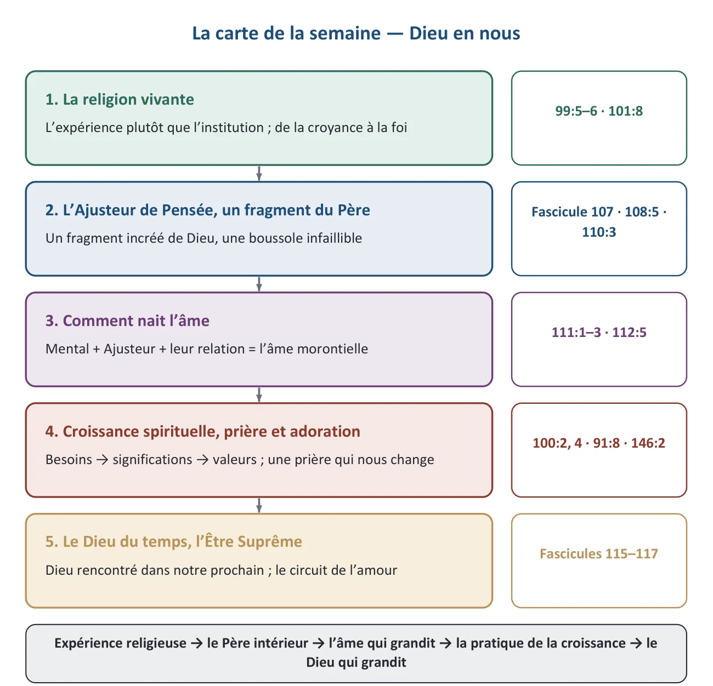
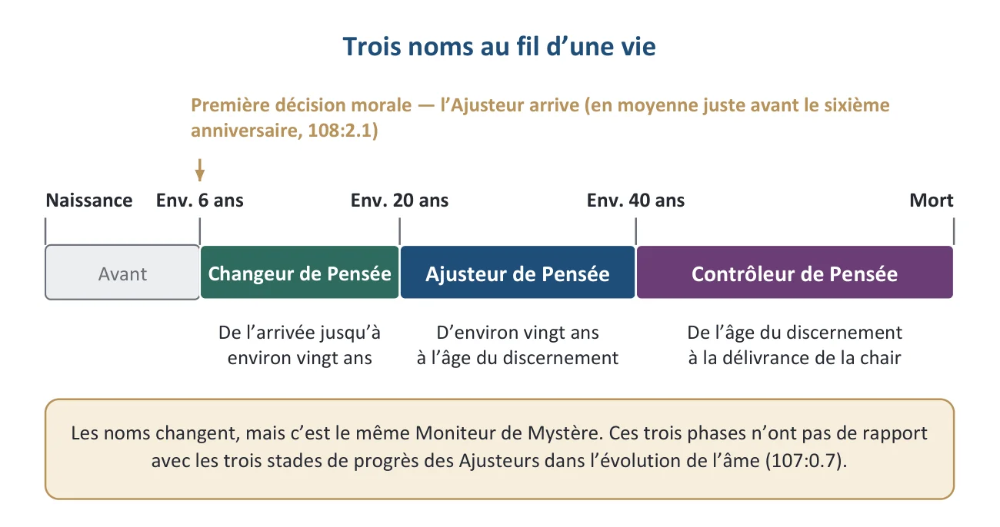
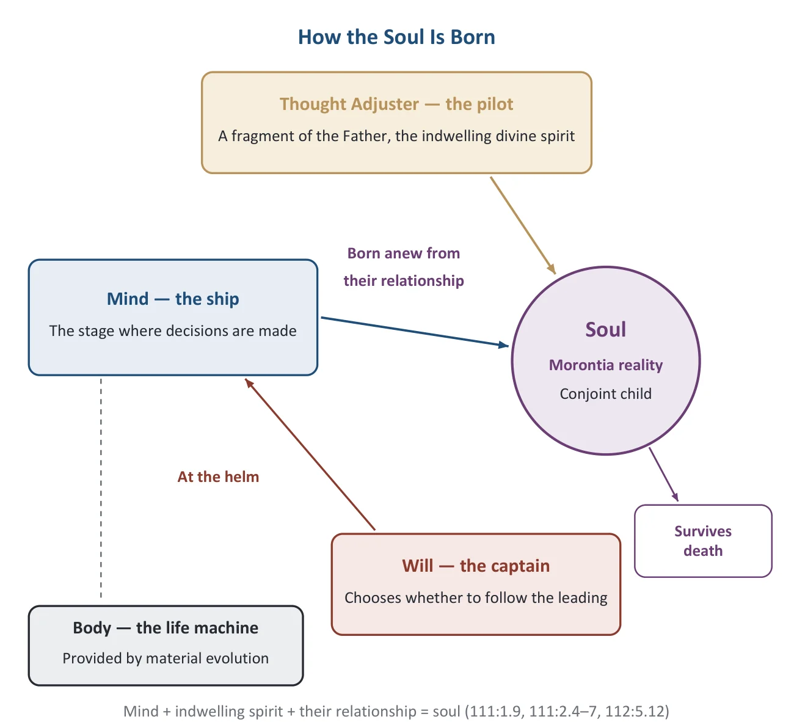

Dieu en nous
Lecture : Fascicule 99:5–6 · Fascicule 101:1, 8 · Fascicule 107 · Fascicule 108:5 · Fascicule 110:3 · Fascicule 111:1–3, 5 · Fascicule 112:5 · Fascicule 100:2, 4 · Fascicule 91:8 · Fascicule 146:2 · Fascicules 115–117

Si les deux dernières semaines racontaient l’histoire extérieure de notre planète, cette semaine se tourne vers l’histoire intérieure d’un être humain. Le Livre d’Urantia dit que la vraie religion n’est ni une institution ni un credo, mais l’expérience personnelle de connaitre Dieu comme Père. Cette expérience est possible parce que le Père Universel a envoyé un fragment de lui-même, l’Ajusteur de Pensée, vivre dans le mental humain. À mesure que le mental et l’Ajusteur travaillent ensemble, une âme grandit, capable de survivre à la mort, et elle grandit par la prière, l’adoration et l’amour du prochain. Toutes ces petites croissances s’ajoutent au Dieu qui grandit lui-même dans le temps, l’Être Suprême.
Pour commencer
Imaginez un vieux poste de radio. La station émet jour et nuit, mais si le bouton est un peu décalé, on n’entend que des grésillements. Tournez lentement le bouton du bout du doigt et, au moment où la fréquence s’accorde, une chanson s’élève, claire, au-dessus des crépitements. Le signal remplissait la pièce depuis le début. Ce qui a changé, c’est le récepteur.
L’histoire intérieure que raconte le Livre d’Urantia ressemble beaucoup à cela. Dieu est présent en ce moment même dans chaque mental humain et il guide sans relâche, et pourtant, la plupart du temps, nous ne percevons pas la musique.
Cette semaine, nous regardons cette station intérieure, l’Ajusteur de Pensée ; l’âme qui grandit en recevant le signal ; et la prière et l’adoration, cette pratique qui consiste à accorder le bouton.
1. La religion vivante — institution et expérience
La religion est d’abord une expérience
Le mot « religion » fait d’ordinaire penser à des bâtiments, à des cérémonies et à des doctrines. Le Livre d’Urantia renverse cet ordre : la racine de la religion, c’est la relation vivante entre une personne et Dieu. Le fascicule 99 le dit en une seule phrase.
N’oubliez jamais ceci : la vraie religion consiste à connaitre Dieu comme votre Père et l’homme comme votre frère. La religion ne consiste pas à croire servilement à des menaces de punition ou à des promesses magiques de récompenses mystiques futures.99:5.2
Où cette expérience a-t-elle lieu ? Le fascicule 101 répond : non dans l’émotion agitée, mais dans la forme la plus élevée de la pensée.
La religion n’est pas le produit de la raison, mais, vue de l’intérieur, elle est entièrement raisonnable. La religion ne dérive pas de la logique de la philosophie humaine, mais, en tant qu’expérience des mortels, elle est entièrement logique.101:1.1
L’esprit divin établit le contact avec l’homme mortel, non par des sentiments ou des émotions, mais dans le domaine de la pensée la plus élevée et la plus spiritualisée. Ce sont vos pensées, et non vos sentiments, qui vous conduisent vers Dieu.101:1.3
L’intensité d’un sentiment n’est pas la mesure d’une expérience religieuse. Dieu rencontre les gens dans ce lieu tranquille où ils réfléchissent à ce qui est juste et le choisissent.
La croyance et la foi
Le livre trace une ligne nette entre la croyance et la foi. Accepter un enseignement comme vrai, c’est la croyance ; elle ne devient la foi que lorsqu’elle change réellement l’orientation d’une vie.
La croyance a atteint le niveau de la foi quand elle motive la vie et façonne la manière de vivre. Le fait d’accepter un enseignement comme vrai n’est pas la foi, c’est une simple croyance.101:8.1
La croyance limite et enchaine toujours ; la foi se déploie et libère. La croyance attache, la foi affranchit. … Les croyances peuvent devenir la propriété d’un groupe, mais la foi doit être personnelle.101:8.2
| Point de comparaison | Croyance | Foi |
|---|---|---|
| Ce que c’est | Accepter un enseignement comme vrai | Cette croyance qui gouverne la manière de vivre |
| Caractère | Limite et fige | Élargit et libère |
| Où elle vit | Peut être partagée par un groupe | Ne grandit que dans le cœur de chacun |
| Ce vers quoi elle regarde | Doctrines et déclarations | Le Dieu vivant |
Un credo peut se réciter ensemble, mais personne ne peut avoir la foi à la place d’un autre. Qu’est-ce qui unit alors les gens de foi ?
Un jour, les religionistes se réuniront et se mettront à coopérer réellement sur la base de l’unité des idéaux et des buts, plutôt que de tenter d’y parvenir en se basant sur des opinions psychologiques et des croyances théologiques. Ce sont les buts plutôt que les crédos qui devraient unir les religionistes.99:5.7
Le fascicule 103 montre clairement l’ordre entre la théologie et la religion.
Il est beaucoup plus facile aux hommes de s’accorder sur des valeurs religieuses — sur des buts — que sur des croyances —des interprétations. … Ce n’est pas la théologie qui produit la religion, c’est la religion qui donne naissance à la philosophie théologique.103:1.4
Quand l’institution se durcit
Rien de tout cela ne signifie que le livre juge inutiles les groupes religieux. Ceux qui partagent une foi se rassemblent naturellement, et le fascicule 99 décrit avec chaleur à quoi sert un tel rassemblement.
Il y a un but réel dans la socialisation de la religion. Les activités religieuses collectives ont pour but de mettre en scène la fidélité envers la religion ; de magnifier les attraits de la vérité, de la beauté et de la bonté ; … d’amplifier le service de fraternité désintéressé ; de glorifier les potentiels de la vie de famille ; de promouvoir l’éducation religieuse ; de fournir de sages conseils et des directives spirituelles et d’encourager le culte en commun.99:6.2
Le danger survient quand le rassemblement se raidit en institution. La même section donne ensuite une longue liste d’avertissements.
Mais, à mesure que la religion se conforme à des institutions, son pouvoir de faire du bien s’amenuise, tandis que ses possibilités de faire du mal s’accroissent considérablement. Les dangers de la religion formaliste sont les suivants : fixation des croyances et cristallisation des sentiments ; … religion détournée du service de Dieu au service de l’Église ; penchant des chefs à devenir administrateurs au lieu de ministres ; … et elle perd graduellement le message sauveur de l’évangile de salut éternel.99:6.3
Et elle laisse une phrase courte et solide.
Le sectarisme est une maladie de la religion institutionnelle, et le dogmatisme est un esclavage de la nature spirituelle. Il vaut bien mieux avoir une religion sans Église qu’une Église sans religion.99:6.1
| Point de comparaison | Religion vivante | Institution durcie |
|---|---|---|
| Centre | L’expérience d’une personne avec Dieu | L’organisation et son entretien |
| Ce qui unit | Des buts et des idéaux communs | Des credo identiques |
| Dirigeants | Des ministres qui servent | Des administrateurs qui gèrent |
| Vérité | Grandit et reçoit une interprétation nouvelle | Uniformisée et fossilisée |
| Fruit | Fruits de l’esprit, amour fraternel | Sectes, discrimination, exclusion |
Dissiper un malentendu
Un malentendu courant : le Livre d’Urantia rejette l’Église et enseigne aux gens à croire chacun de leur côté. Ce que dit le Livre d’Urantia : les groupes religieux ont de vrais buts : le culte et l’éducation, la fraternité et le service (99:6.2). Ce contre quoi le livre met en garde, c’est la pression des credo et la rigidité institutionnelle. Le fascicule 103 dit que de grands espoirs sont permis pour toute Église qui libère ses membres de la contrainte des dogmes (103:5.12).
2. L’Ajusteur de Pensée, un fragment du Père
Le plus lointain et le plus proche de tous
Lors de la semaine 1, nous avons brièvement rencontré l’expression « un fragment de Dieu ». Le fascicule 107 présente pleinement ce fragment, et il s’ouvre sur un paradoxe saisissant.
BIEN que le Père Universel réside personnellement au Paradis, au centre même de l’univers, il est présent de manière effective aussi sur les mondes de l’espace dans le mental de ses innombrables enfants du temps, car il les habite sous l’aspect des Moniteurs de Mystère. Le Père éternel est à la fois aussi éloigné que possible de ses fils planétaires mortels et aussi intimement associé que possible avec eux.107:0.1
« Moniteur de Mystère » est un autre nom de l’Ajusteur de Pensée, et « habiter » signifie ici vivre à l’intérieur. Le Père qui est au centre de toutes choses est en même temps à l’intérieur de chaque mental humain. Pourquoi le ferait-il ? Le fascicule 107 relie ce don au commandement que nous avons vu dans le fascicule 1 : « Soyez parfaits ».
Ayant commandé à l’homme d’être parfait comme lui-même est parfait, Dieu est descendu sous forme d’Ajusteur pour devenir le partenaire expérientiel de l’homme dans l’accomplissement de la destinée céleste ainsi ordonnée. Le fragment de Dieu qui habite le mental de l’homme constitue l’assurance, absolue et sans réserve, que l’homme peut trouver le Père Universel par son association avec cet Ajusteur divin107:0.3
Dieu n’a pas seulement donné le commandement ; il est descendu lui-même pour être notre partenaire dans son accomplissement. L’Ajusteur est-il alors une sorte d’ange que Dieu aurait créé ? Le fascicule 107 répond que non.
tout le monde est d’accord sur le fait qu’ils émanent directement du Père Universel, la Source-Centre Première. Ils ne sont pas des êtres créés, mais des entités de fragmentation constituant la présence factuelle du Dieu infini. … Ils sont de Dieu et, autant que nous puissions le discerner, ils sont Dieu.107:1.2
L’Ajusteur n’est pas un messager que Dieu envoie, mais un fragment de Dieu lui-même. Une tasse d’eau de mer n’est pas l’océan tout entier, mais c’est exactement la même eau. Le fascicule 107 compare l’œuvre de l’Ajusteur à une boussole.
L’Ajusteur est une essence absolue d’un être infini, emprisonnée dans le mental d’une créature finie. … L’Ajusteur est la divine réalité d’univers qui factualise la vérité que Dieu est le Père de l’homme. L’Ajusteur est l’infaillible compas cosmique de l’homme, orientant toujours et surement l’âme vers Dieu.107:0.6
Appeler Dieu notre Père n’est donc pas une simple façon de parler. Le Père a réellement partagé son propre esprit avec ses enfants. Et ce guide ne faillit jamais.
Les anges et d’autres êtres spirituels de type élevé, y compris les types de Fils des univers locaux, peuvent occasionnellement embrasser le mal, peuvent parfois s’écarter du chemin divin, mais les Ajusteurs ne chancèlent jamais. On peut absolument se fier à eux, et c’est également vrai pour chacun de leurs sept groupes.108:5.3
Ce que fait l’Ajusteur
L’Ajusteur n’est pas là pour rendre la vie confortable. Le fascicule 108 est clair sur ce point.
Leur mission concerne principalement la vie future, et non la présente. On les appelle aides célestes, et non aides terrestres. Ils ne cherchent pas à faciliter la carrière mortelle ; ils s’occupent plutôt de rendre votre vie raisonnablement difficile et accidentée, afin de stimuler et de multiplier vos décisions.108:5.5
Un bon entraineur ne rend pas la journée d’un athlète facile. L’Ajusteur se réjouit aussi de notre santé et de notre bonheur (110:1.3), mais tout ce soin converge vers un seul but : que nous survivions à jamais et que nous devenions de plus en plus semblables à Dieu.
La difficulté, c’est que cette direction est difficile à entendre.
Mais, quand votre Ajusteur essaye de communiquer avec vous, son message se perd généralement dans le flux matériel des courants d’énergie du mental humain ; ce n’est qu’occasionnellement que vous recueillez un écho, un faible et lointain écho de la voix divine.110:3.1
C’est exactement la radio de notre récit d’ouverture. Cela veut-il dire que celui qui entend mal a échoué ?
L’ignorance à elle seule ne peut jamais empêcher la survie, pas plus que les doutes confusionnels ou l’incertitude craintive. Seule la résistance consciente à la gouverne de l’Ajusteur peut empêcher la survie de l’âme immortelle en évolution.110:3.5
Douter et s’égarer est tout autre chose que se détourner délibérément. Coopérer avec l’Ajusteur n’est pas une affaire d’expériences mystiques particulières ; cela se passe dans les motivations et les décisions de tous les jours (110:3.6). Ce n’est pas non plus un renoncement morose.
Le grand but de l’existence humaine consiste à se mettre au diapason de la divinité de l’Ajusteur intérieur. … Mais un effort dévoué et déterminé pour accomplir la destinée éternelle est entièrement compatible avec l’allégresse et la joie de vivre, et avec une carrière terrestre honorable et réussie. … La vie idéale consiste à servir avec amour, plutôt qu’à mener une existence d’appréhension craintive.110:3.4
Trois noms au fil d’une vie
Le fascicule 107 mentionne aussi un détail intrigant : l’Ajusteur reçoit des noms différents à mesure qu’une personne avance en âge.
Depuis l’arrivée de l’Ajusteur jusqu’à la pleine croissance relative d’environ vingt ans d’âge sur Urantia, les Moniteurs sont parfois appelés Changeurs de Pensée. Depuis cette époque jusqu’à l’âge du discernement, environ quarante ans, les Moniteurs de Mystère s’appellent Ajusteurs de Pensée. Depuis l’acquisition du discernement jusqu’à la délivrance de la chair, on les appelle souvent Contrôleurs de Pensée.107:0.7
L’Ajusteur arrive à peu près au moment où l’enfant prend sa première décision morale, en moyenne juste avant son sixième anniversaire (108:2.1). Ces trois noms peuvent se lire non comme un changement de l’Ajusteur, mais comme l’approfondissement de la relation entre la personne et l’Ajusteur.
Après avoir raconté toute la vie de Jésus, le tout dernier fascicule du livre confie cette tâche aux gens d’aujourd’hui.
Le grand défi lancé à l’homme moderne consiste à établir de meilleures communications avec le divin Moniteur qui habite le mental humain.196:3.34

Mots nouveaux
- Moniteur de Mystère : autre nom de l’Ajusteur de Pensée, ainsi appelé parce que sa nature reste voilée de mystère.
- Habiter (présence intérieure) : vivre à l’intérieur. L’Ajusteur habite le mental humain, et non le cerveau (110:1.1).
- Fusion : l’union éternelle d’une âme humaine survivante avec l’Ajusteur. Une fois fusionnés, les deux ne peuvent plus jamais être séparés.
Dissiper un malentendu
Un malentendu courant : l’Ajusteur de Pensée n’est qu’un autre nom de la conscience morale, ou des bonnes pensées de mon propre mental. Ce que dit le Livre d’Urantia : l’Ajusteur n’est ni un être créé ni une partie du mental humain ; c’est un fragment de Dieu lui-même (107:1.2). Il ne passe jamais outre à la volonté humaine, mais respecte toujours les choix de la personne (111:1.8), et il agit dans les conflits entre le bien et le mal même quand la personne n’en a pas conscience (108:5.9).
3. Comment nait l’âme
La scène du mental
L’Ajusteur travaille dans le mental humain. Le fascicule 111 montre d’où vient chacune de ces trois choses : le corps, l’Ajusteur et le mental.
L’évolution matérielle vous a procuré une machine à vivre, votre corps. Le Père lui-même vous a doté de la réalité d’esprit la plus pure que l’on connaisse dans l’univers, votre Ajusteur de Pensée. Mais le mental a été remis entre vos mains, il est sujet à vos propres décisions, et c’est par le mental que vous vivez ou mourez. C’est à l’intérieur de ce mental et avec ce mental que vous prenez les décisions morales qui vous permettent de devenir semblables à l’Ajusteur, c’est-à-dire semblables à Dieu.111:1.4
L’évolution a donné le corps et le Père a donné l’Ajusteur. Seul le mental, qui se tient entre les deux, a été « remis entre vos mains ». Le fascicule 111 représente les trois comme un seul navire.
Le mental est votre navire, l’Ajusteur est votre pilote, la volonté humaine est le capitaine. Le maitre du vaisseau mortel devrait avoir la sagesse de se fier au divin pilote pour conduire l’âme ascendante dans les havres morontiels de la survie éternelle.111:1.9
Si habile que soit le pilote, c’est le capitaine qui commande. L’Ajusteur montre le chemin, mais c’est la volonté humaine qui fixe le cap. Le fascicule 111 insiste encore sur ce point.
Les Ajusteurs manipulent le mental de l’homme, mais ne le dominent jamais contre sa volonté. Pour les Ajusteurs, la volonté de l’homme est suprême.111:1.8
Non pas deux, mais trois
Qu’est-ce donc que l’âme ? Le Livre d’Urantia dit que l’âme ne nous est pas remise au départ ; elle grandit.
La création évolutionnaire de cette âme immortelle résulte de trois facteurs, et non de deux. Ces trois antécédents de l’âme morontielle humaine sont les suivants : 1. Le mental humain et toutes les influences cosmiques qui le précèdent et qui agissent sur lui. 2. L’esprit divin qui habite ce mental humain … 3. La relation entre le mental matériel et l’esprit divin, qui dénote une valeur et comporte une signification ne se trouvant dans aucun des deux facteurs de cette association. La réalité de cette relation unique n’est ni matérielle ni spirituelle, mais morontielle. C’est l’âme.111:2.4-7
L’âme nait de la relation entre le mental et l’Ajusteur. Quand deux personnes partagent une longue amitié, cette amitié devient une réalité nouvelle qui n’appartient à aucune des deux seule, mais qui vit entre elles. Le fascicule 112 appelle l’âme un « enfant ».
Un élément réel, un produit de l’évolution humaine, quelque chose en sus du Moniteur de Mystère, survit à la mort. Cette entité nouvellement apparue est l’âme, et elle survit à la mort de votre corps physique aussi bien qu’à celle de votre mental matériel. Cette entité est l’enfant conjoint de la vie et des efforts conjugués du vous humain en liaison avec le vous divin, l’Ajusteur.112:5.12

Ce que nous devenons
Qu’est-ce qui fait grandir l’âme ? Le fascicule 111 regarde moins la quantité de ce que sait un mental que la direction vers laquelle il se tourne.
Ce qui assure la survie n’est pas tellement ce que le mental comprend, mais plutôt ce que le mental cherche à comprendre. Ce n’est pas tellement ce à quoi le mental ressemble, mais ce à quoi le mental s’efforce de ressembler, qui constitue son identification à l’esprit. … Ce que vous êtes aujourd’hui n’est pas aussi important que ce que vous devenez jour après jour et dans l’éternité.111:1.5
Même si beaucoup reste inconnu et que beaucoup manque encore, l’âme grandit tant qu’elle continue à choisir la direction du désir de connaitre Dieu. Et ce qui grandit ainsi ne se perd pas.
Mais ceci est éternellement vrai : ce que vous commencez dans le temps, vous l’achèverez surement dans l’éternité — si cela mérite d’être achevé.111:3.7
La personnalité qui ne change pas
Le fascicule 112 nous dit où commence ce voyage.
Urantia est votre point de départ ; c’est là que vous êtes joint à votre divin Ajusteur de Pensée en une union temporaire. Vous avez été doté d’un guide parfait ; … Pendant tous ces âges et stades successifs de croissance évolutionnaire, une partie de vous reste toujours absolument inchangée ; c’est la personnalité —la permanence en présence du changement.112:0.1
Ce qui demeure identique tandis que l’âme grandit, c’est la personnalité. La personnalité est l’identité unique que le Père Universel donne à chaque personne, et il n’en existe pas deux semblables (112:0.12). C’est ce même « je » qui s’éveille sur les mondes des maisons après la mort. Là, l’Ajusteur revient et relie l’ancienne vie à la nouvelle.
L’Ajusteur de Pensée ne vous rappellera et ne vous répètera que les souvenirs et les expériences formant une partie essentielle de votre carrière universelle. … Mais la personnalité et les relations entre personnalités ne sont jamais des échafaudages ; la mémoire humaine des relations de personnalités a une valeur cosmique et persistera.112:5.22
Beaucoup de souvenirs sont enlevés comme un échafaudage une fois le bâtiment achevé, mais nos relations avec les personnes que nous avons aimées demeurent. Le voyage après la mort que nous avons suivi lors de la semaine 6 a sa semence qui grandit ici et maintenant, sur cette terre.
Mots nouveaux
- Âme : la réalité morontielle qui nait et grandit à partir de la relation entre le mental et l’Ajusteur intérieur. Elle survit à la mort.
- Morontia : le niveau de réalité situé entre le matériel et le spirituel. L’âme et les corps des mondes des maisons y appartiennent.
- Personnalité : le don unique que le Père Universel fait à chaque personne, le « je » qui demeure inchangé au milieu du changement.
4. Croissance spirituelle, prière et adoration
Trois marches de croissance
Le fascicule 100 résume en trois marches le chemin de la croissance spirituelle.
La croissance spirituelle est d’abord un éveil aux besoins, ensuite un discernement des significations et enfin une découverte des valeurs. La preuve du vrai développement spirituel consiste dans la manifestation d’une personnalité humaine motivée par l’amour, animée par un esprit de service désintéressé et dominée par l’adoration sincère des idéaux de perfection de la divinité.100:2.2
Nous prenons conscience qu’il manque quelque chose, nous commençons à voir ce que signifient les évènements de la vie, et parmi eux nous découvrons ce qui est vraiment précieux. Cette croissance n’est pas toujours paisible.
La perplexité est inévitable en religion ; il ne peut y avoir de croissance sans conflits psychiques et sans agitation spirituelle.100:4.2
Une période où la foi est ébranlée n’a pas à être vue comme un échec. Le fascicule 100 dit qu’il existe un lieu qui ne tombe pas, même dans de tels moments.
Jésus dépeignit la sécurité profonde de l’homme connaissant Dieu en disant : « Pour celui qui connait Dieu et croit au royaume, qu’importe si toutes les choses terrestres s’effondrent ? » Les sécurités temporelles sont vulnérables, mais les sécurités spirituelles sont invulnérables. Quand les marées de l’adversité humaine, de l’égoïsme, de la cruauté, de la haine, de la méchanceté et de la jalousie viennent battre l’âme du mortel, on peut se reposer dans l’assurance qu’il existe un bastion intérieur, la citadelle de l’esprit, qui est absolument inexpugnable100:2.7

Une personne par jour
La preuve de la croissance, c’est l’amour. Pourtant l’amour ne vient pas de la seule résolution. Le fascicule 100 propose un chemin très concret.
Vous ne pouvez pas aimer vraiment vos compagnons par un simple acte de volonté. L’amour nait seulement d’une compréhension approfondie et consommée des mobiles et des sentiments de votre prochain. Il est moins important d’aimer tous les hommes aujourd’hui que d’apprendre chaque jour à en aimer un de plus.100:4.6
Le fascicule 100 montre aussi comment la compréhension murit en amour.
Dès lors que vous comprenez votre voisin, vous devenez tolérant, et cette tolérance va se transformer, croitre en amitié et murir en amour.100:4.4
Essayer de comprendre la seule personne qui nous pèse aujourd’hui sur le cœur est un pas plus grand que de faire le vœu d’aimer toute l’humanité.
La prière change celui qui prie
Qu’est-ce que la prière ? Le fascicule 91 place la prière à côté de la magie pour montrer la différence.
La magie fut une tentative pour adapter la Déité aux circonstances ; la prière est l’effort pour adapter la personnalité à la volonté de la Déité.91:8.2
La magie cherche à plier le ciel à notre volonté ; la prière cherche à plier notre volonté au ciel. Le fascicule 91 compare cela aux ailes d’un oiseau.
Mais la véritable prière atteint bel et bien la réalité. Même quand les courants aériens sont ascendants, nul oiseau ne peut prendre son essor sans déployer ses ailes. La prière élève l’homme parce qu’elle est une technique de progrès par utilisation des courants spirituels ascendants de l’univers.91:8.9
Dieu répond à la prière de l’homme en lui donnant une révélation accrue de la vérité, une appréciation rehaussée de la beauté et un concept élargi de la bonté. La prière est un geste subjectif, mais elle établit le contact avec de puissantes réalités objectives sur les niveaux spirituels de l’expérience humaine91:8.11
La prière n’est pas une technique pour échapper à des conflits, mais plutôt un stimulant pour croitre en face du conflit. Ne priez que pour des valeurs, non pour des choses ; pour la croissance, et non pour la satisfaction.91:8.13
Jésus aussi enseigna longuement la prière à ses disciples à Jotapata, une petite ville de Galilée. L’un de ses points principaux était celui-ci.
La prière ne change pas l’attitude divine envers l’homme, mais elle change l’attitude de l’homme envers le Père invariant.146:2.8
Il leur apprit aussi à rester un moment en silence après avoir prié.
Jésus enseigna à ses disciples qu’après avoir fait leur prière au Père, ils devaient rester quelque temps dans un état de réceptivité silencieuse pour donner à l’esprit intérieur les meilleures chances de parler à l’âme attentive. … Jésus enseigna que l’adoration rend l’adorateur de plus en plus semblable à l’être qu’il adore.146:2.17
Si la prière est le temps de parler, le silence est le temps d’écouter, le temps d’accorder le bouton de la radio. En murissant, la prière devient adoration. La prière porte encore quelque chose de nos propres besoins ; l’adoration ne demande rien et se réjouit simplement de Dieu parce qu’il est Dieu.
Ta volonté est ma volonté
Toute cette croissance se ramène à un seul choix : le choix de faire la volonté du Père. Le fascicule 111 dit que ce choix n’écrase pas la volonté, mais l’emploie au plus haut point.
Ce choix ne consiste pas tant en une négation de la volonté de la créature — « que ce ne soit pas ma volonté mais la tienne qui soit faite » — mais plutôt en une affirmation positive de la créature : « c’est ma volonté que ta volonté soit faite ».111:5.6
En regard de la Bible
Paul demandait : « Ne savez-vous pas que vous êtes le temple de Dieu, et que l’Esprit de Dieu habite en vous ? » (1 Corinthiens 3:16). Jésus enseignait à ses auditeurs à entrer dans leur chambre et à prier le Père « qui est là dans le lieu secret » (Matthieu 6:6). Le Livre d’Urantia explique plus en détail ce « Dieu en nous » sous le nom d’Ajusteur de Pensée.
Dissiper un malentendu
Un malentendu courant : la prière est un moyen d’obtenir ce que nous voulons, et si nous demandons assez longtemps et avec assez d’insistance, Dieu changera d’avis. Ce que dit le Livre d’Urantia : la prière ne change pas l’attitude de Dieu, mais la nôtre (146:2.8). Dieu répond à l’attitude de l’âme, non aux mots (91:8.12). Jésus mit en garde contre l’habitude de ne prier que dans les moments de difficulté, et enseigna que la seule forme de prière qui convienne à tous les enfants de Dieu est « que ta volonté soit faite » (146:2.12).
5. Le Dieu du temps, l’Être Suprême
Le Dieu qui grandit
Pour finir, nous rencontrons l’idée la moins familière de la semaine. Dieu le Père est éternel et parfait, et il ne grandit pas. Pourtant, le Livre d’Urantia dit qu’il existe aussi un Dieu qui grandit avec les univers du temps et de l’espace. C’est l’Être Suprême.
Le Suprême est Dieu-dans-le-temps ; il est le secret de la croissance des créatures dans le temps ; il est aussi la conquête du présent incomplet et la consommation du futur en voie de perfectionnement.117:2.1
« Le Suprême » est le nom plus court que le livre donne à l’Être Suprême. Le fascicule 116 fait observer qu’un regard honnête sur le désordre d’Urantia amène raisonnablement à conclure que ce monde est dirigé par des Créateurs qui ne sont pas encore parfaits (116:0.2). L’univers n’est pas une maison achevée, mais une maison encore en construction.
Mes choix s’y ajoutent
Le plus remarquable dans cet enseignement, c’est que les choix humains s’ajoutent réellement à cette croissance.
DANS la mesure où nous faisons la volonté de Dieu, quel que soit le lieu de l’univers où nous ayons notre existence, le potentiel tout-puissant du Suprême devient d’autant plus actuel.117:0.1
Le fascicule 115 montre brièvement en quoi notre position diffère devant le Père et devant le Suprême.
AVEC Dieu le Père, la grande relation est la filiation. Avec Dieu le Suprême, l’accomplissement est la condition préalable au statut — il faut faire quelque chose aussi bien qu’être quelque chose.115:0.1
| Point de comparaison | Dieu le Père | Dieu le Suprême |
|---|---|---|
| Nature | Éternel et parfait | Grandit dans le temps |
| Notre relation | La filiation, reçue comme un don | L’accomplissement, élaboré ensemble |
| Où le trouver | Dans notre propre cœur | Dans le cœur de tous les autres |
| Découverte | Peut être trouvé par une seule personne | Trouvé par toutes les créatures ensemble |
Le grand circuit de l’amour
Où rencontrons-nous donc le Suprême ? Le fascicule 117 répond ainsi.
L’homme peut découvrir le Père dans son cœur, mais il lui faudra rechercher le Suprême dans le cœur de tous les autres hommes117:6.23
Le chemin vers le Père se tourne vers l’intérieur ; le chemin vers le Suprême se tourne vers l’extérieur, vers notre prochain. Les deux chemins se rejoignent en un seul grand cercle.
Sa Déité est le large canal par lequel l’amour du Père s’écoule extérieurement vers toute la création, et il est la grande voie par laquelle les créatures finies passent vers l’intérieur à la recherche du Père, qui est amour.117:6.3
Le fascicule 117 montre ensuite ce qui circule le long de ce canal.
L’homme ne peut jamais saisir l’amour du Père pour l’emprisonner dans son cœur. L’amour du Père ne peut devenir réel pour l’homme mortel qu’en passant par sa personnalité, alors qu’à son tour lui-même effuse cet amour sur ses compagnons. Le grand circuit d’amour part du Père, se diffuse par les fils vers les frères et, de là, se dirige vers le Suprême. L’amour du Père apparait dans la personnalité du mortel par le ministère de l’Ajusteur intérieur. Ce fils qui connait Dieu révèle cet amour à ses frères de l’univers, et cette affection fraternelle est l’essence de l’amour du Suprême.117:6.10
L’amour n’est pas un étang immobile, mais une rivière qui coule. L’amour que nous recevons du Père ne devient nôtre que si nous le laissons couler vers les autres. Et à mesure que ce courant grossit, le Dieu du temps grandit.

Cette découverte ne se fait pas d’un seul coup.
Les hommes ne trouvent pas le Suprême d’une façon soudaine et spectaculaire, comme un tremblement de terre ouvre des abimes dans les roches ; mais ils le trouvent lentement et patiemment, comme une rivière qui érode doucement le sol où elle coule.117:6.25
Et ceux qui suivent ce chemin ne sont jamais seuls.
Mais nul mortel connaissant Dieu ne peut jamais être solitaire dans son voyage à travers le cosmos, car il sait que le Père fait, à ses côtés, chaque pas du chemin, tandis que la route même qu’il poursuit est la présence du Suprême.117:6.27
Au-dedans, le Père marche à nos côtés ; sous nos pas, le chemin lui-même est le Suprême. Le fascicule 117 nous rappelle ce que tout ce voyage cherche.
Les hommes oublient bien trop souvent que Dieu est la plus grande expérience dans l’existence humaine. Les autres expériences sont limitées dans leur nature et leur contenu, mais l’expérience de Dieu n’a pas d’autres limites que la capacité des créatures à comprendre, et cette expérience par elle-même accroit cette capacité. Quand les hommes sont à la recherche de Dieu, ils recherchent tout. Quand ils trouvent Dieu, ils ont tout trouvé.117:6.9
L’étude de cette semaine tient en une seule phrase : Dieu vit en nous, et nous le rencontrons de nouveau dans notre prochain.
Mots nouveaux
- Être Suprême : le Dieu qui grandit par l’expérience avec les univers du temps et de l’espace. Employé seul, il est aussi appelé « le Suprême ».
- Conscience de Dieu : l’expérience de prendre conscience de la réalité de Dieu grâce à l’esprit intérieur (103:1.6).
- Grand circuit de l’amour : le cercle dans lequel l’amour du Père passe par chaque personne vers son prochain, puis jusqu’au Suprême.
Points clés de la semaine
- La vraie religion est l’expérience vivante d’une personne qui connait Dieu comme Père et les autres comme ses frères et sœurs.
- La croyance accepte un enseignement ; la foi, c’est cette croyance qui change réellement une vie. Quand une institution se durcit, la puissance de la religion s’affaiblit.
- L’Ajusteur de Pensée n’est pas un être créé, mais un fragment réel du Père Universel, une boussole infaillible qui oriente toujours l’âme vers Dieu.
- L’âme n’est pas donnée au départ. Elle nait comme une réalité morontielle de la relation entre le mental et l’Ajusteur, elle grandit et elle survit à la mort.
- Le mental est le navire, l’Ajusteur le pilote, la volonté le capitaine. L’Ajusteur ne passe jamais outre à la volonté humaine.
- La prière ne change pas Dieu ; elle nous change. L’adoration nous rend de plus en plus semblables à celui que nous adorons.
- L’Être Suprême est Dieu qui grandit dans le temps. Nous rencontrons le Père en nous-mêmes et le Suprême dans notre prochain.
Questions à méditer
- Parmi les choses que vous dites « croire », lesquelles changent réellement votre manière de vivre ? À la lumière de la distinction faite dans le fascicule 101, chacune relève-t-elle de la croyance ou de la foi ?
- Dans l’image du mental comme navire, de l’Ajusteur comme pilote et de la volonté comme capitaine (111:1.9), quel genre de capitaine êtes-vous en ce moment ?
- Si vous mettiez en pratique cette semaine « apprendre chaque jour à en aimer un de plus » (100:4.6), qui serait cette personne, et par où pourriez-vous commencer ?
À lire pour la semaine prochaine
- Fascicules 119–170 — Le Créateur devient un Fils de l’Homme : les sept effusions de Micaël et la vie de Jésus de Nazareth